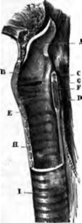

The Larynx
Description
This section is from the book "Wonders Of The Human Body", by Auguste Le Pileur. Also available from Amazon: Wonders of the Human Body.
The Larynx
The organ of the voice is a sort of a cartilaginous tube composed of movable pieces articulated together, perfectly symmetrical, wider and triangular at its upper portion, which opens into the pharynx, cylindrical at its -lower portion, where it is continuous with the trachea. It is placed in the anterior and middle portion of the neck and below the hyoid bone, to which it is united by muscles and ligaments, and in consequence it follows the movements of the hyoid bone and the tongue, rising and falling with them Its movements are connected with deglutition, the acuteness and gravity of sounds emitted, and with respiration according as it is diaphragmatic or clavicular (see Respiration, p. 97).
Five cartilages form the skeleton of the larynx; they are:
1. The Cricoid Cartilage
1. The Cricoid Cartilage (cricos, a ring); it is situated at the base of the organ, and is attached to the first ring of the trachea.
2. The Thyroid Cartilage (Thyreos, A Buckler)
2. The Thyroid Cartilage (Thyreos, A Buckler), which is composed of two quadrilateral plates, joined together in front and on the median line. This cartilage protects, as its name indicates, the organ of the voice. In front a ligament attaches its lower border to the cricoid cartilage, with which it is articulated behind; its anterior surface presents at the top an angular sloping protuberance, which is more marked in man than in woman. It forms the projection on the front of the neck which is called "Adam's apple." The upper border is united to the hyoid bone by a membrane and ligaments.
Fig. 44. Section of larynx in the median line.
A. Epiglottis, at front of -which the hyoid bone and base of the tongue are teen.
B. Thyroid cartilage.
C. Arytenoid cartilage.
d. Posterior portion of cricoid cartilage.
E. Anterior portion of cricoid cartilage.
F. Vocal cord of right side.
G. Ventricle of the larynx.
H. Rings of the trachea. I. Trachea.
3. The Two Arytenoid Cartilages (Arutaina, A Funnel)
3. The Two Arytenoid Cartilages (Arutaina, A Funnel); they form the posterior and superior wall of the larynx, and come together behind in the shape of the lip of a ewer; they articulate with the cricoid cartilage, and are united to the thyroid by muscles and ligaments.
4. The Epiglottis (Epi, Added To, Glotta, The Tongue)
4. The Epiglottis (Epi, Added To, Glotta, The Tongue) is a sort of cartilaginous valve, very elastic and mobile, situated a little below the base of the tongue, and attached to the superior border of the thyroid cartilage. Its function is to cover exactly the superior opening of the larynx during deglutition, so as to prevent the introduction of the food into the air-passages. When the tongue is brought well forward, and the base depressed, in some individuals the summit of the epiglottis is visible.
Numerous muscles attach the larynx to the sternum, to the hyoid bone, and by this last to the shoulder-blade, to the tongue, and to the lower jaw; these muscles are called extrinsic, and move the larynx as one piece. Others, called intrinsic muscles of the larynx, combine to form its walls, and to modify its diameter by acting on the cartilages, and assist in the functions of the glottis. Lastly, the arytenoid cartilages are united by ligaments to the epiglottis, or to the thyroid cartilage; these last, the thyro-arytenoid ligaments form, with the muscles of the same name and with the mucous membrane, the vocal cords, of which we proceed to speak.
The cavity of the larynx, or its internal surface, does not correspond in form and dimensions with the external surface; it is cylindrical at the bottom, triangular at the top; the dimensions of the lower part are invariable, while those of the upper portion, on the contrary, are variable in form, from the mobility of the epiglottis, of the arytenoid cartilages, etc. About the middle of its height the laryngeal cavity presents on each side a fold formed by the thyro-arytenoid muscles and lower ligaments of the same name, and the mucous membrane; these resemble two ribbons of a white colour tinged with rose, running horizontally from front to back, attached by their external border and their extremities to the wall of the larynx, free on the surface and internal border, leaving an opening between them which is linear, elliptic, or triangular., according to the moment when it is observed, and whether we see the whole or only the two anterior thirds. This opening permits the passage of the air into and out of the chest, it is called the glottis, the folds which circumscribe it have been called the vocal cords. About one-third of an inch higher up there are two other similar but less prominent folds, they are formed by the superior thyro-arytenoid ligaments, and are designated by this name, or by that of the superior vocal cords (see fig. 44, p. 229). The space between them has been called the superior glottis, it is larger than the glottis proper, and does not resemble it in form when examined by the aid of the laryngoscope. Before this instrument was invented the larynx was described by anatomists as they saw it in the dissecting-room, hence the name of superior glottis, and the likening of this orifice to that of the glottis.
Between the vocal cords proper and the superior thyroarytenoid ligaments there is on each side a depression; these are the ventricles of the larynx; and lastly, a little above these ligaments is the superior opening of the larynx, surmounted in front by the epiglottis, which is lowered upon, and covers it completely during deglutition. The space comprised between the glottis and the superior opening of the larynx is called the vestibule of the glottis.
Formerly authors were divided in opinion in regard to the larynx; some gave the name of glottis to all the region between the level of the inferior and that of the superior vocal cords, others applied it to the superior glottis, and others again to the inferior glottis only. This last opinion, which has been commonly received since the investigations of Bichat and Boyer, has been confirmed by the laryngoscope, which demonstrates the existence of a single glottis, and a single pair of vocal cords.
The internal walls of the larynx are lined with a fibrous membrane, constituted in part by yellow elastic tissue. This membrane, which forms the thyro-arytenoid and aryteno-epi-glottic ligaments, is covered throughout its whole extent by a mucous membrane, which on the free border of the vocal cords is very thin and transparent, slightly adherent, and covered with an epithelium different from that found on the rest of its surface.
The larynx is but slightly developed in early infancy, and does not differ in its dimensions in the two sexes; and the characteristics of the voice are the same also. From the third to the twelfth year this organ remains nearly stationary but about the fourteenth year it almost doubles in size in the boy, and the voice takes a masculine character. This evolution is rapid, and is nearly accomplished in the course of a year, though the larynx is not perfectly developed till the twenty-fifth year. In girls it augments about a third in size The larynx, therefore, of an adult woman is smaller than that of man, its angles are less prominent, and the glottis is smaller. These differences are related to the characteristic pitch, compass, and power, which distinguish the voice of man from that of woman.
In diaphragmatic respiration the larynx is immovable; but when the expansion of the chest extends to the upper ribs, the sternum, and the clavicle, two of the extrinsic muscles of the larynx assisting in the elevation of the sternum, cause by their contraction the descent of the larynx, to which they are attached by their upper extremities. (See Respiration, P 97-)
Continue to:
- prev: Chapter XVI. Voice And Speech
- Table of Contents
- next: Physiology Of The Larynx, Mechanism Of The Voice